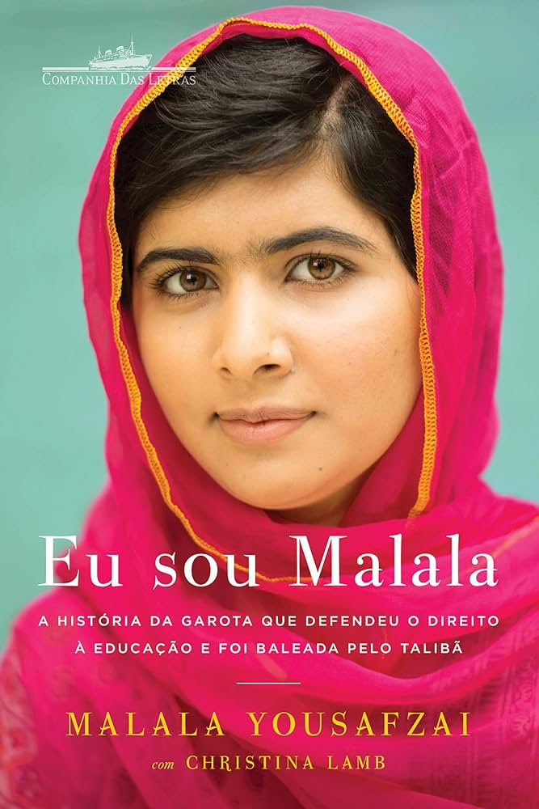

“Eu sou Malala”, escrito por Malala Yousafzai em coautoria com a jornalista Christina Lamb, é uma obra que transcende a simples narrativa biográfica para se tornar um manifesto global em defesa da educação, da igualdade de gênero e da resistência pacífica contra a opressão. Publicado em 2013, o livro conta a história de Malala, uma jovem paquistanesa que, aos 15 anos, foi alvo de um atentado do Talibã por insistir em frequentar a escola e defender o direito das meninas à educação.

A narrativa é construída de forma envolvente, mesclando a trajetória pessoal de Malala com o contexto político e social do Vale do Swat, no Paquistão, região marcada pelo avanço do fundamentalismo religioso. A escrita é acessível, mas não simplória, permitindo que o leitor mergulhe na realidade de uma família que, apesar das adversidades, valorizou a educação como ferramenta de transformação. O livro também expõe a complexidade do conflito entre tradição e modernidade, mostrando como o extremismo afeta não apenas a vida das mulheres, mas toda a estrutura social.
Um dos pontos altos da obra é a humanização de Malala. Longe de ser retratada como uma figura intocável, ela aparece como uma jovem comum, com medos, sonhos e dúvidas, mas que encontrou na coragem de sua família e em sua própria determinação a força para enfrentar o Talibã. A parceria com Christina Lamb garante um texto bem estruturado, com detalhes históricos e políticos que enriquecem a compreensão do leitor sobre o cenário em que a história se desenrola.
No entanto, é possível criticar o fato de que, em alguns momentos, o livro parece se perder em descrições excessivas do cotidiano, o que pode desacelerar o ritmo da narrativa. Além disso, embora a história de Malala seja inspiradora, alguns leitores podem sentir falta de uma análise mais profunda sobre as raízes do extremismo e as possíveis soluções para o problema, além de uma reflexão mais crítica sobre o papel do Ocidente nesse contexto.
A tradução para o português, feita por Caroline Chang, Denise Bottmann, George Schlesinger e Luciano Vieira Machado, merece elogios por manter a fluidez e a força emocional do texto original. A edição brasileira é acessível e pode ser encontrada, por exemplo, na biblioteca do IFRJ Campus Pinheiral, o que facilita o acesso de estudantes e interessados a essa história inspiradora.
Em suma, "Eu sou Malala" é uma leitura essencial para quem deseja compreender a luta pela educação em contextos de opressão e se inspirar com a história de uma jovem que, mesmo diante da violência, escolheu a palavra como arma. O livro não apenas conta a história de Malala, mas também convida o leitor a refletir sobre seu papel na construção de um mundo mais justo e igualitário.
Por: Lívia Maria de Souza Campos